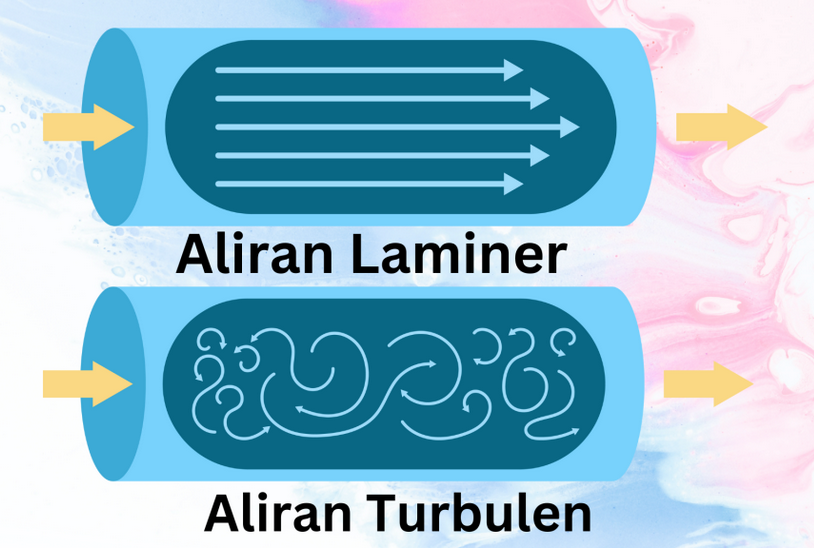
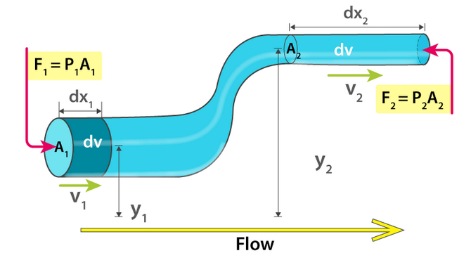
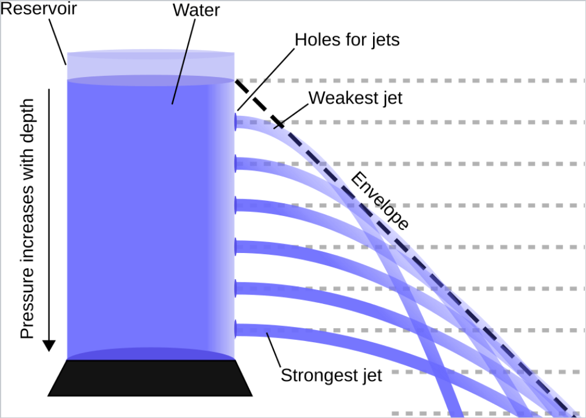
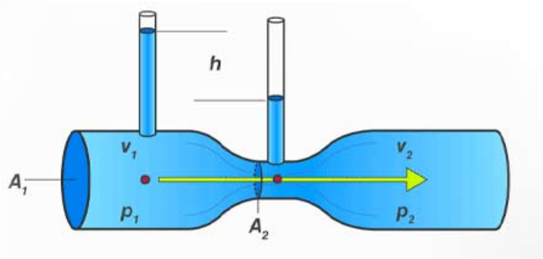
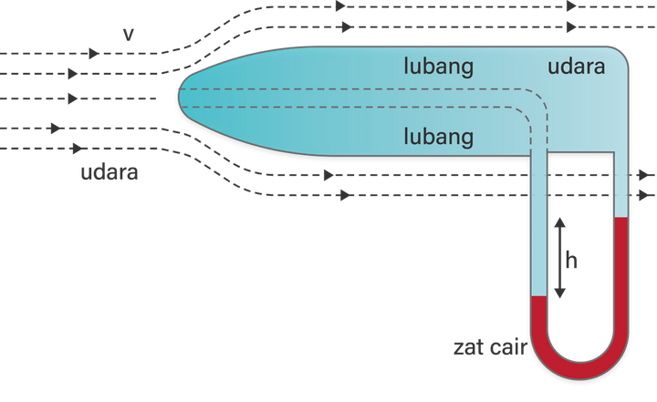
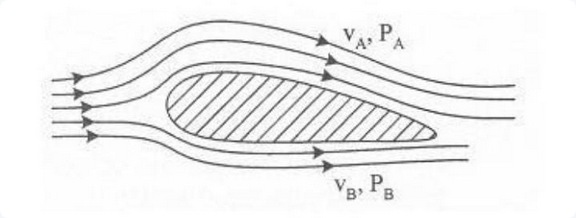

# Fluida Dinamis --- - Sifat-sifat Fluida - Debit Air - Persamaan Kontinuitas dan Asas Bernoulli - Penerapan Asas Bernoulli --- ## Sifat-sifat Fluida Ideal Fluida Dinamis mempelajari benda cair yang bergerak atau mengalir. Untuk itu, dianggap benda cair tersebut adalah fluida ideal yang memiliki sifat-sifat: - **Tidak kompresibel**, jika diberi tekanan maka volumenya tidak berubah - **Tidak mengalami gesekan**, Pada saat mengalir, gesekan fluida degan dinding dapat diabaikan. --- - **Alirannya stasioner**, tiap paket fluida memiliki arah aliran tertentu dan tidak terjadi turbulensi (pusaran-pusaran). - **Alirannya tunak** (*steady*), aliran fluida memiliki kecepatan yang konstan terhadap waktu. --- ### Dua Jenis Aliran fluida: - **Aliran laminer**, yakni aliran di mana paket fluida meluncur bersamaan dengan paket fluida di sebelahnya, setiap jalur paket fluida tidak berseberangan dengan jalur lainnya. Aliran laminer adalah aliran ideal dan terjadi pada aliran fluida dengan kecepatan rendah. --- - **Aliran turbulen**, yaitu aliran dimana paket fluida tidak meluncur bersamaan dengan paket fluida di sebelahnya, setiap jalur paket fluida dapat bersebrangan dengan jalur lainnya. Aliran turbulen ditandai dengan adanya pusaran-pusaran air (vortex atau turbulen) dan terjadi jika kecepatan alirannya tinggi. --- <p></p> --- ## Debit Cairan - Debit adalah jumlah volume fluida yang mengalir per satuan waktu (biasanya per detik). ###### $$Q=\frac{V}{t}$$ ###### $$Q=Av$$ --- Keterangan: - *Q* = Debit aliran fluida (m<sup>3</sup>/s) - *V* = Volume fluida (m<sup>3</sup>) - *t* = selang waktu (s) - *A* = luas penampang aliran (m<sup>2</sup>) - *v* = kecepatan aliran fluida (m/s) --- ## Persamaan Kontinuitas dan Asas Bernoulli - Karena fluida tidak mampu dimampatkan (inkompresibel), maka aliran fluida di sembarang titik sama. Jika ditinjau dari dua tempat, maka debit aliran 1 sama dengan debit aliran 2. --- <p></p> --- $$Q_1=Q_2$$ ###### $$\frac{V_1}{t}=\frac{V_2}{t}$$ ###### $$A_1v_1=A_2v_2$$ --- - Asas Bernoulli menyatakan bahwa pada fluida dengan keadaan tunak, ideal, dan inkompresibel, **jumlah energi dalam, energi kinetik, dan energi potensialnya** memiliki nilai yang sama di sepanjang aliran. - Jika ditinjau dari dua tempat, maka hukum Bernoulli dapat dinyatakan dengan: --- $$E_1+EK_1+EP_1=E_2+EK_2+EP_2$$ $$E_1+\frac 1 2 mv^2_1+mgh_1=E_2+\frac 1 2 mv^2_2+mgh_2$$ ###### $$P_1+\frac 1 2 \rho v^2_1+\rho gh_1=P_2+\frac 1 2 \rho v^2_2+\rho gh_2$$ --- Keterangan: - *P* = Tekanan (Pa) - *ρ* = massa jenis fluida (kg/m<sup>3</sup>) - *v* = kecepatan aliran fluida (m/s) - *g* = percepatan gravitasi (m/s<sup>2</sup>) - *h* = ketinggian (m) --- ## Penerapan Asas Bernoulli ##### 1. Teorema Toricelli - Fenomena air yang menyembur keluar dari lubang penyimpanan/tangki air dinamakan dengan teorema Toricelli. Besar energi kinetik air yang menyembur keluar dari lubang tangki air sama dengan besar energi potensialnya. Dengan begitu, kecepatan air pada lubang penyemburan sama dengan air yang jatuh bebas dari batas ketinggian air. --- <p></p> --- - Berdasarkan gambar diatas, dapat diformulasikan kecepatan air pada lubang tangki air sebesar: $$\frac 1 2 \rho v^2=\rho gh$$ $$v^2=2gh$$ ###### $$v=\sqrt2gh$$ --- ##### 2. Venturimeter - Venturimenter adalah alat yang berfungsi untuk mengukur debit aliran fluida dinamis yang mengalir di pipa dengan mengandalkan Asas Bernoulli. Venturimeter berbentuk seperti pipa yang bagian tengahnya menyempit lalu kemudian melebar kembali. --- <p></p> --- $$P_1+\frac 1 2 \rho v^2_1+\rho gh_1=P_2+\frac 1 2 \rho v^2_2+\rho gh_2$$ $$\frac 1 2 \rho v^2_1+\rho gh_1=\frac 1 2 \rho v^2_2+\rho gh_2$$ $$\rho gh_1-\rho gh_2=\frac 1 2 \rho v^2_2-\frac 1 2 \rho v^2_1$$ ###### $$\rho g\Delta h=\frac 1 2 \rho (v^2_2-v^1_2)$$ --- ##### 3. Tabung Pitot - Tabung Pitot adalah alat yang berfungsi untuk mengukur kelajuan aliran fluida dinamis dengan cara mengukur perbedaan tekanan aliran dengan dengan tekanan statisnya. --- <p></p> --- $$P_1+\frac 1 2 \rho_{gas} v^2_1+\rho_{cair} gh_1=P_2+\frac 1 2 \rho_{gas} v^2_2+\rho_{cair} gh_2$$ $$\rho_{cair} gh_1=\frac 1 2 \rho_{gas} v^2_2+\rho_{cair} gh_2$$ $$\rho_{cair} gh_1-\rho gh_2=\frac 1 2 \rho_{gas} v^2_2$$ ###### $$\rho_{cair} g\Delta h=\frac 1 2 \rho_{gas} (v^2_2-v^1_2)$$ --- ##### 4. Gaya Angkat Pesawat - Pesawat dapat mengudara karena gaya angkat yang dihasilkan sayap saat pesawat tersebut melaju. - Saat pesawat melaju, aliran fluida (udara) akan melewati sayap pesawat. Aliran udara yang melewati sayap bagian atas melintas lebih jauh dibanding aliran udara yang melewati sayap bagian bawah. --- - Perbedaan kecepatan ini menimbulkan perbedaan tekanan. Tekanan di sayap bagian atas akan lebih rendah dibanding tekanan pada sayap bagian bawah. Oleh karena sayap menerima tekanan dari bawah, maka sayap terdorong ke atas (gaya angkat) yang juga ikut mendorong pesawat ke atas sehingga pesawat dapat mengudara. <p></p> --- $$P_1+\frac 1 2 \rho v^2_1+\rho gh_1=P_2+\frac 1 2 \rho v^2_2+\rho gh_2$$ $$P_1+\frac 1 2 \rho v^2_1=P_2+\frac 1 2 \rho v^2_2$$ $$P_1-P_2=\frac 1 2 \rho v^2_2-\frac 1 2 \rho v^2_1$$ ###### $$P_1-P_2=\frac 1 2 \rho (v^2_2-v^1_2)$$